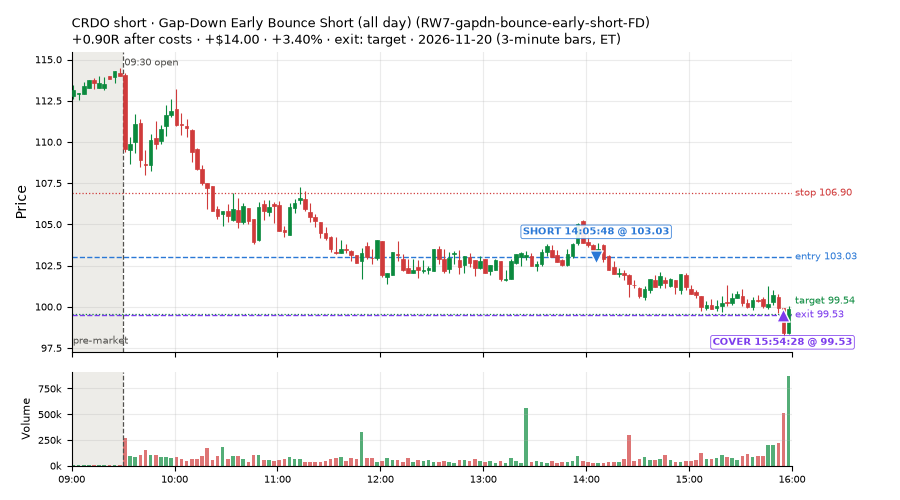
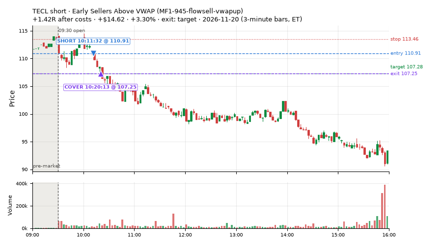
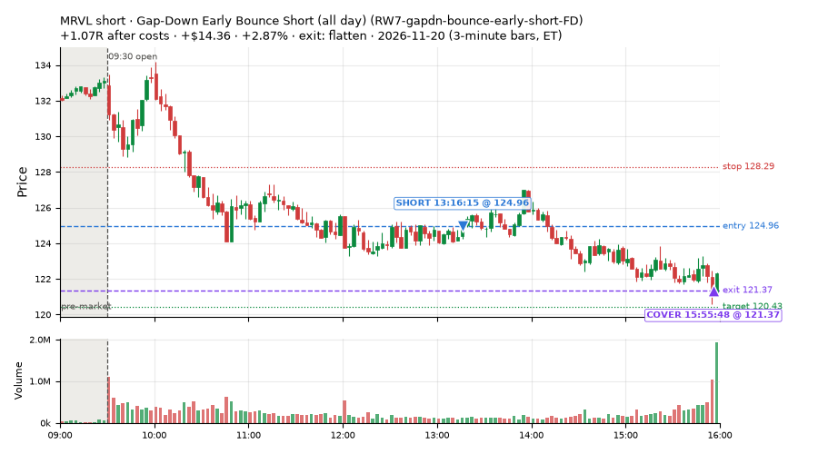
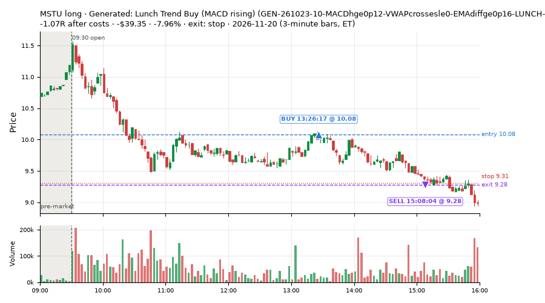
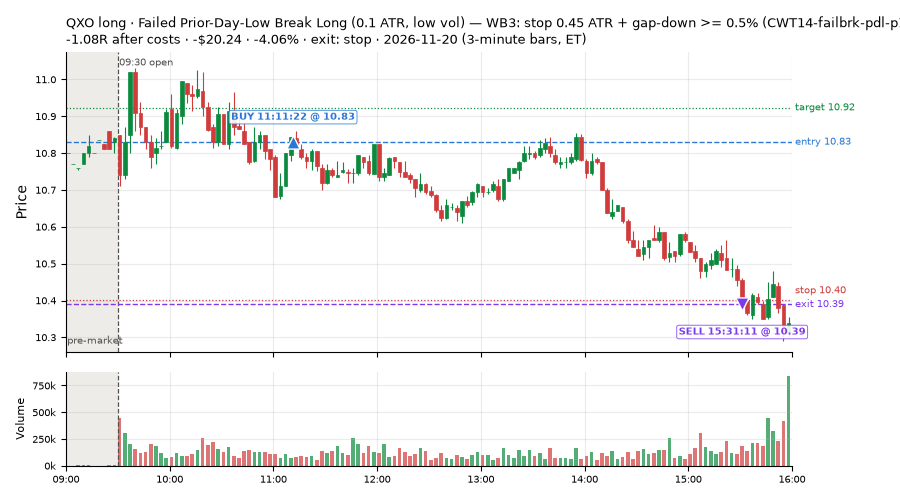
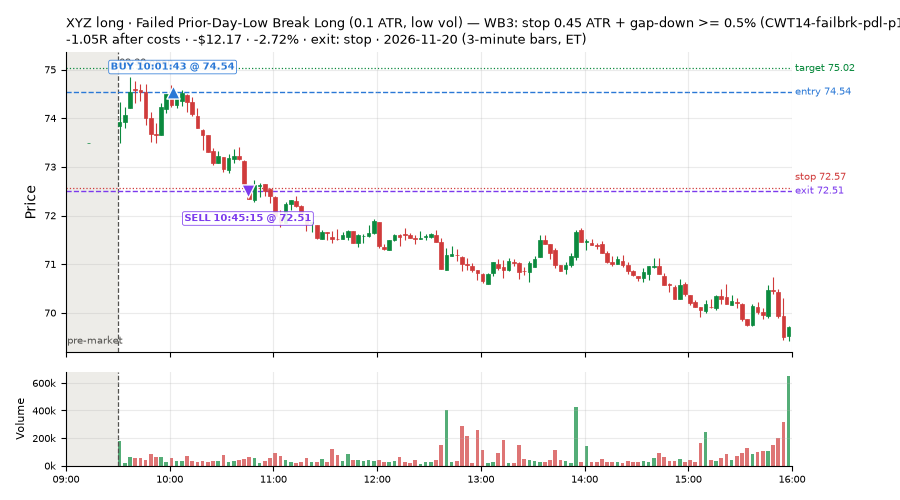
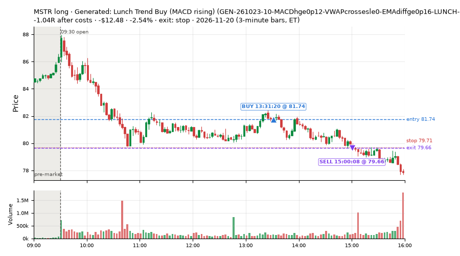
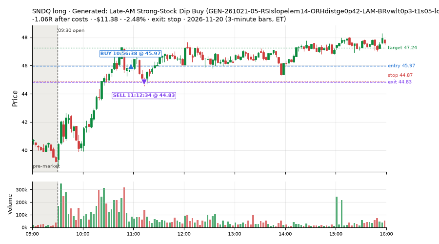

106 trades · win rate 62% · P/L $146.85
PROBATION: no live setup has passed both locked test periods. 10 owner-directed setups added 2026-10-08 (MarcoFlow top 5 + 5 new), untested live. RW6G1 (RW6 + VWAP band guard) added 2026-10-09, probation.

| Symbol | Setup | Side | In | Out | Entry | Exit | Exit reason | % gained | P/L |
|---|---|---|---|---|---|---|---|---|---|
| CRDO | Gap-Down Early Bounce Short (all day) (RW7-gapdn-bounce-early-short-FD) | short | 14:05 | 15:54 | 103.03 | 99.53 | target | +3.40% | $14.00 |
| TECL | Early Sellers Above VWAP (MF1-945-flowsell-vwapup) | short | 10:11 | 10:20 | 110.91 | 107.25 | target | +3.30% | $14.62 |
| MRVL | Gap-Down Early Bounce Short (all day) (RW7-gapdn-bounce-early-short-FD) | short | 13:16 | 15:55 | 124.96 | 121.37 | flatten | +2.87% | $14.36 |
| Symbol | Setup | Side | In | Out | Entry | Exit | Exit reason | % lost | P/L |
|---|---|---|---|---|---|---|---|---|---|
| MSTU | GEN-261023-10-MACDhge0p12-VWAPcrossesle0-EMAdiffge0p16-LUNCH-BRvwlt0p4-hold-long | long | 13:26 | 15:08 | 10.08 | 9.28 | stop | -7.96% | $-39.35 |
| QXO | CWT14-failbrk-pdl-p10-lowvol-long-WB3 | long | 11:11 | 15:31 | 10.83 | 10.39 | stop | -4.06% | $-20.24 |
| XYZ | CWT14-failbrk-pdl-p10-lowvol-long-WB3 | long | 10:01 | 10:45 | 74.54 | 72.51 | stop | -2.72% | $-12.17 |
| MSTR | GEN-261023-10-MACDhge0p12-VWAPcrossesle0-EMAdiffge0p16-LUNCH-BRvwlt0p4-hold-long | long | 13:31 | 15:00 | 81.74 | 79.66 | stop | -2.54% | $-12.48 |
| SNDQ | GEN-261021-05-RSIslopelem14-ORHdistge0p42-LAM-BRvwlt0p3-t1s05-long | long | 10:56 | 11:12 | 45.97 | 44.83 | stop | -2.48% | $-11.38 |








Signal to fill: median 1s, 90th percentile 2s (106 trades). Bars close each minute; the order follows the bar close.
Best excursion (MFE): median 0.78R; worst (MAE) median 0.63R. 20% of trades never got +0.25R in our favour; 5 reached +1R and still closed at or below 0.
| Symbol | Setup | Best R | Worst R | Closed R |
|---|---|---|---|---|
| IVE | GEN-261022-06-NewLOD-ORBfailUp-BuyPresslem0p49-PM-SPYltm0p5-t1s1-long | +1.27 | -1.22 | -1.31 |
| VONG | GEN-261022-06-NewLOD-ORBfailUp-BuyPresslem0p49-PM-SPYltm0p5-t1s1-long | +1.24 | -1.05 | -1.13 |
| UDOW | GEN-261022-06-NewLOD-ORBfailUp-BuyPresslem0p49-PM-SPYltm0p5-t1s1-long | +1.29 | -1.04 | -1.07 |
| QQQM | GEN-261022-06-NewLOD-ORBfailUp-BuyPresslem0p49-PM-SPYltm0p5-t1s1-long | +1.09 | -1.02 | -1.09 |
| MGK | GEN-261022-06-NewLOD-ORBfailUp-BuyPresslem0p49-PM-SPYltm0p5-t1s1-long | +0.78 | -1.13 | -1.16 |
| Entry time | Trades | Win | Avg R | P/L |
|---|---|---|---|---|
| 09:50-10:30 | 8 | 75% | +0.19 | $14.43 |
| 10:30-11:30 | 17 | 71% | +0.25 | $26.91 |
| 11:30-13:00 | 11 | 73% | +0.25 | $22.30 |
| 13:00-14:00 | 40 | 80% | +0.47 | $119.89 |
| 14:00-16:00 | 30 | 27% | -0.48 | $-36.68 |
| Setup | Trades | Win | Avg R after costs | Adj R (net of SPY) | Avg R ex-market (all sessions) | P/L |
|---|---|---|---|---|---|---|
| Panic Flush Reversal (3x volume) (CWT05-flush-m05-v3-long) | 6.0 | 17% | -0.90 | -0.19 | -0.08 (beta +0.99, n 49) | $-22.58 |
| Failed Prior-Day-Low Break Long (0.1 ATR, low vol) — WB3: stop 0.45 ATR + gap-down >= 0.5% (CWT14-failbrk-pdl-p10-lowvol-long-WB3) | 9.0 | 11% | -0.74 | +0.12 | -0.23 (beta +0.37, n 73) | $-62.88 |
| Generated: PM Buying-Surge Fade (extended) (GEN-261019-10-FlowShiftge0p42-SMA50dge1p7-PM-BRoplt0p5-t1s1-short) | 7.0 | 71% | +0.46 | +0.26 | +0.29 (beta +0.55, n 34) | $28.95 |
| Generated: Midday VWAP Loss Buy (fading) (GEN-261020-06-VWAPxDn-Slope6lem0p011-BarsSinceHODge35-MID-BRoplt0p5-holdtr-long) | 2.0 | 0% | -1.09 | -0.39 | -0.99 (beta +0.20, n 14) | $-13.60 |
| Generated: Late-AM Strong-Stock Dip Buy (GEN-261021-05-RSIslopelem14-ORHdistge0p42-LAM-BRvwlt0p3-t1s05-long) | 1.0 | 0% | -1.06 | -1.13 | -0.51 (beta +2.39, n 6) | $-11.38 |
| Generated: Late New-High Short (QQQ down) (GEN-261022-03-NewHOD-Ret15mATRge0p12-SMA20dge0p59-LATE-QQQdn-t05s1-short) | 1.0 | 100% | +1.75 | +2.62 | +0.62 (beta +2.88, n 7) | $3.57 |
| Generated: PM New-Low Buy (failed breakout) (GEN-261022-06-NewLOD-ORBfailUp-BuyPresslem0p49-PM-SPYltm0p5-t1s1-long) | 15.0 | 0% | -1.03 | -0.06 | -0.32 (beta +0.78, n 38) | $-62.38 |
| Generated: PM Prior-Low Bounce Short (GEN-261022-10-EMAdChgge0p15-ORLdistge0p41-PDLdistle0p14-PM-BRoplt0p5-holdtr-short) | 3.0 | 33% | +0.16 | -0.56 | -0.10 (beta -0.36, n 9) | $-1.54 |
| Generated: Lunch Trend Buy (MACD rising) (GEN-261023-10-MACDhge0p12-VWAPcrossesle0-EMAdiffge0p16-LUNCH-BRvwlt0p4-hold-long) | 2.0 | 0% | -1.05 | -0.85 | -0.80 (beta -0.16, n 9) | $-51.83 |
| Early Sellers Above VWAP (MF1-945-flowsell-vwapup) owner-directed; holdouts once: Sep-Oct +0.169R n86, Apr-Jun -0.050R n429 | 1.0 | 100% | +1.42 | +1.23 | +0.41 (beta -0.56, n 5) | $14.62 |
| Quiet Downtrend Bounce Short (near-miss) (NM-AMS-N1-quiet-morning-short) | 1.0 | 100% | +0.20 | +0.20 | +0.30 (beta -0.03, n 5) | $1.66 |
| Gap-Down Early Bounce Short (all day) (RW7-gapdn-bounce-early-short-FD) | 55.0 | 98% | +0.73 | -0.15 | -0.03 (beta -0.60, n 305) | $328.60 |
| Index Last-Half-Hour Momentum (intraday_momentum) failed Apr-Jun holdout: -0.091R/trade over 147 trades | 3.0 | 33% | -0.47 | +0.03 | -0.06 (beta +0.56, n 19) | $-4.36 |
Market direction (SPY, beta 1) accounted for $203.69 of today's $146.85; the rest ($-56.84) came from the setups themselves. Avg R net of SPY: -0.08 (incl. a hedge leg's cost; report only).
22 setups live today. Today: 223 signals, 106 taken, 0 lost because another setup held the symbol (0%). Since 2026-11-12 (7 sessions): 1543 signals, 719 taken, 10 lost to other setups (1%). Peak open positions today 53 of 400 slots. Earnings blackout removed 181 symbols before scanning.
Simulated playing time (not live): 821 what-if trades of signals not taken, avg +0.02R, 55% winners; of them 10 lost to another setup (avg -0.15R).
Silent: IDX3-spy075-0955-3x-trail, GEN-261028-04-ORBfailUp-RSI14le22-Gaplem1p2-LATE-BRvwgt0p5-holdtr-long · Starved: MF1-945-flowsell-vwapup
| Prio | Setup | Today sig / taken | Sessions | Signals / taken / trades | Taken/day | Expected/day | Lost to other setups | Lost to (setup n) | Top skip reasons | SIMULATED: not-taken n / avg R / win | Verdict |
|---|---|---|---|---|---|---|---|---|---|---|---|
| 1 | Gap-Down Bounce-off-Low Fade (all day) — WB4: bounce > 0.82 ATR, RSI5 ≥ 50, 75-min hold L3-gap-slope-lowdist-FD-WB4 | 2 / 0 | 4 | 52 / 3 / 3 | 0.75 | – | 0 | – | not shortable / shorts off 40, spread / quote / size 7, other 2 | 49 / -0.47R / 31% | slow 3.8 entries/week; ~16 weeks to 60 trades |
| 2 | Failed Prior-Day-Low Break Long (0.1 ATR, low vol) — WB3: stop 0.45 ATR + gap-down >= 0.5% CWT14-failbrk-pdl-p10-lowvol-long-WB3 | 22 / 9 | 4 | 117 / 73 / 73 | 18.25 | – | 1 | RW7-gapdn-bounce-early-short-FD 1 | spread / quote / size 36, other 7, symbol held by another setup 1 | 43 / -0.17R / 63% | ok 91.2 entries/week |
| 3 | Gap-Down VWAP Loss Short (10% gap) — WB4: below open, real bounce, ADV 20M CWT09-gapdn-vwaploss-g10-short-WB4 | 1 / 0 | 4 | 3 / 0 / 0 | 0.00 | – | 0 | – | not shortable / shorts off 2, spread / quote / size 1 | 3 / -0.39R / 0% | slow no entries yet |
| 4 | Index Dip Bounce 3 3x S&P IDX3-spy075-0955-3x-trail | 0 / 0 | 7 | 0 / 0 / 0 | 0.00 | – | 0 | – | – | 0 / – | silent no signals in 7 session(s); no expected rate on file |
| 5 | * Oversold Slope Turn with Breadth Turning Up (near-miss) LD5-st2-breadthup-t05s1-long | 0 / 0 | 7 | 4 / 4 / 4 | 0.57 | – | 0 | – | – | 0 / – | slow 2.9 entries/week; ~21 weeks to 60 trades |
| 6 | Generated: Late-AM Strong-Stock Dip Buy GEN-261021-05-RSIslopelem14-ORHdistge0p42-LAM-BRvwlt0p3-t1s05-long | 8 / 1 | 5 | 42 / 6 / 6 | 1.20 | – | 0 | – | other 25, spread / quote / size 11 | 36 / +0.32R / 56% | slow 6.0 entries/week; ~10 weeks to 60 trades |
| 7 | Quiet Downtrend Bounce Short (near-miss) NM-AMS-N1-quiet-morning-short | 3 / 1 | 7 | 8 / 5 / 5 | 0.71 | – | 0 | – | not shortable / shorts off 1, spread / quote / size 1, other 1 | 3 / -0.10R / 67% | slow 3.6 entries/week; ~17 weeks to 60 trades |
| 8 | Generated: Midday VWAP Loss Buy (fading) GEN-261020-06-VWAPxDn-Slope6lem0p011-BarsSinceHODge35-MID-BRoplt0p5-holdtr-long | 2 / 2 | 5 | 29 / 14 / 14 | 2.80 | – | 1 | RW7-gapdn-bounce-early-short-FD 1 | other 8, spread / quote / size 6, symbol held by another setup 1 | 15 / -0.94R / 0% | slow 14.0 entries/week; ~4 weeks to 60 trades |
| 9 | Generated: Lunch Trend Buy (MACD rising) GEN-261023-10-MACDhge0p12-VWAPcrossesle0-EMAdiffge0p16-LUNCH-BRvwlt0p4-hold-long | 2 / 2 | 5 | 15 / 9 / 9 | 1.80 | – | 0 | – | other 5, spread / quote / size 1 | 6 / -0.33R / 33% | slow 9.0 entries/week; ~7 weeks to 60 trades |
| 10 | Generated: PM New-Low Buy (failed breakout) GEN-261022-06-NewLOD-ORBfailUp-BuyPresslem0p49-PM-SPYltm0p5-t1s1-long | 25 / 15 | 5 | 54 / 38 / 38 | 7.60 | – | 1 | RW7-gapdn-bounce-early-short-FD 1 | other 13, spread / quote / size 2, symbol held by another setup 1 | 16 / -0.65R / 6% | ok 38.0 entries/week |
| 11 | Generated: Late New-High Short (QQQ down) GEN-261022-03-NewHOD-Ret15mATRge0p12-SMA20dge0p59-LATE-QQQdn-t05s1-short | 6 / 1 | 5 | 17 / 7 / 7 | 1.40 | – | 0 | – | not shortable / shorts off 9, spread / quote / size 1 | 10 / +0.28R / 80% | slow 7.0 entries/week; ~9 weeks to 60 trades |
| 12 | Generated: PM Prior-Low Bounce Short GEN-261022-10-EMAdChgge0p15-ORLdistge0p41-PDLdistle0p14-PM-BRoplt0p5-holdtr-short | 5 / 3 | 5 | 14 / 9 / 9 | 1.80 | – | 0 | – | spread / quote / size 5 | 5 / +0.71R / 100% | slow 9.0 entries/week; ~7 weeks to 60 trades |
| 13 | Generated: PM Buying-Surge Fade (extended) GEN-261019-10-FlowShiftge0p42-SMA50dge1p7-PM-BRoplt0p5-t1s1-short | 21 / 7 | 5 | 99 / 34 / 34 | 6.80 | – | 1 | GEN-261023-10-MACDhge0p12-VWAPcrossesle0-EMAdiffge0p16-LUNCH-BRvwlt0p4-hold-long 1 | not shortable / shorts off 43, spread / quote / size 11, other 9 | 64 / -0.23R / 39% | ok 34.0 entries/week |
| 14 | Early Sellers Above VWAP MF1-945-flowsell-vwapup | 18 / 1 | 7 | 46 / 5 / 5 | 0.71 | 5.33 | 0 | – | spread / quote / size 36, other 4, not shortable / shorts off 1 | 41 / +0.57R / 54% | starved 0.71 entries/day vs ~5.33 expected |
| 15 | Afternoon VWAP Reclaim Fade (all day) NS4-pm-vwap-reclaim-oversold-short-FD | 2 / 0 | 7 | 47 / 19 / 19 | 2.71 | 3.57 | 0 | – | other 12, spread / quote / size 10, not shortable / shorts off 6 | 28 / +0.03R / 54% | slow 13.6 entries/week; ~4 weeks to 60 trades |
| 16 | Panic Flush Reversal (3x volume) CWT05-flush-m05-v3-long | 7 / 6 | 7 | 100 / 49 / 49 | 7.00 | – | 0 | – | other 29, spread / quote / size 18, price through stop/target 2 | 50 / +0.24R / 84% | ok 35.0 entries/week |
| 17 | Afternoon Blow-off Short exhaustion_short | 2 / 0 | 7 | 99 / 46 / 46 | 6.57 | 12.12 | 0 | – | not shortable / shorts off 34, other 10, spread / quote / size 9 | 53 / -0.12R / 42% | ok 32.9 entries/week |
| 18 | Index Last-Half-Hour Momentum intraday_momentum | 3 / 3 | 7 | 19 / 19 / 19 | 2.71 | 2.37 | 0 | – | – | 0 / – | slow 13.6 entries/week; ~4 weeks to 60 trades |
| 19 | Gap-Down Early Bounce Short (all day) RW7-gapdn-bounce-early-short-FD | 94 / 55 | 5 | 584 / 305 / 305 | 61.00 | 59.92 | 6 | CWT14-failbrk-pdl-p10-lowvol-long-WB3 5, CWT05-flush-m05-v3-long 1 | spread / quote / size 103, other 85, per-setup cap 59 | 279 / +0.15R / 62% | ok 305.0 entries/week |
| 20 | Late Sharp Dip in an Uptrend, Long ULT-14-snap-long | 0 / 0 | 1 | 0 / 0 / 0 | 0.00 | – | 0 | – | – | 0 / – | quiet - wait no signals in 1 session(s); too early to tell |
| 21 | Late Sharp Pop in a Downtrend, Short ULT-14-snap-short | 0 / 0 | 1 | 0 / 0 / 0 | 0.00 | – | 0 | – | – | 0 / – | quiet - wait no signals in 1 session(s); too early to tell |
| 22 | Generated: Morning Breakdown Short (volatile) GEN-261022-07-Z12lem1p9-FlowShiftlem0p96-ATRdge3p6-AM-BRopgt0p5-t1s1-short | 0 / 0 | 1 | 0 / 0 / 0 | 0.00 | – | 0 | – | – | 0 / – | quiet - wait no signals in 1 session(s); too early to tell |
Every trade is attached as a CSV you can open and edit in Excel or Google Sheets. Live page: https://misiti15.github.io/MCF/live/